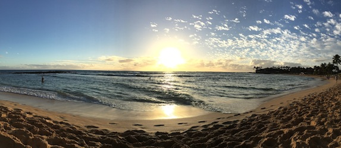

I am a senior at Tufts University studying biology and computer science. I am from Scottsdale, Arizona and was born in Hong Kong.
I love to travel and learn about different cultures through their food. I feel that food is a fantastic way to discover a new place and there is nothing more exciting than finding a local establishment that encompases the atmosphere of a city. I hope to start a travel and food blog that highlights hidden and well-established restaurants in order to get a better understanding of a place.
I am a member of the Tufts Marathon Team and will be running the Boston Marathon on April 20, along with 30 other senior from Tufts. We are fundraising for the nutrition, medical, and fitness programs at Tufts University. Any donations are appreciated and can be made online or by check or credit card through a mailed in pledge form. If you have any questions please contact Coach Don Megerle at donald.megerle@tufts.edu.
